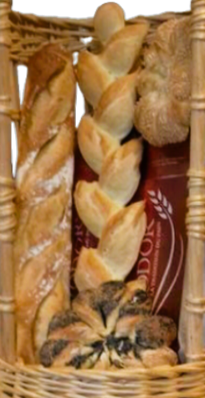
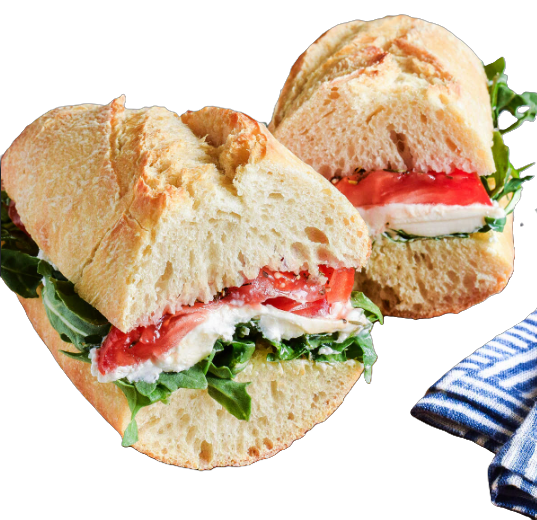

Bienvenue dans notre boulangerie artisanale.
Situés à La Chapelle-sur-Loire, nous vous proposons différents services.
Notre pain
Nos pains et baguettes sont faits à la main tous les jours, matin et après-midi, afin de vous fournir un produit le plus frais possible.

Nos pâtisseries
Nos pâtisseries sont faites sur place tous les matins. Nous prenons également toutes commandes spéciales une semaine à l'avance, afin de vous garantir le meilleur service possible.
Nos sandwiches
Nos sandwiches sont faits à la demande avec nos propres baguettes et des produits frais.
Sandwich jambon ou poulet : 2,70 €
Rajout emmental : 3,60 €
Rajout salade/tomates : 4,60 €
Sandwich végétarien : 3,50 €
Formule repas (1 sandwich, 1 pâtisserie, 1 boisson) : 8,50 €
Vous pouvez également les réserver à l'avance !

Contact
Pour toute commande ou renseignement, merci de nous contacter au 02 36 29 98 28.
Nous sommes ouverts tous les jours sauf le mardi.
De 6h30 à 13h puis de 15h à 19h.
Le dimanche de 7h à 13h.